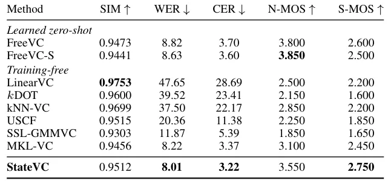
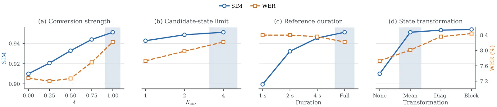

O problema da conversão de voz one-shot
Conversão de voz (voice conversion, VC) é a tarefa de modificar as características de um falante em um áudio de origem para que soem como as de um falante de referência, preservando o conteúdo linguístico original. No cenário one-shot, você tem apenas um único áudio de referência do falante-alvo, e esse áudio pode conter palavras completamente diferentes das que aparecem no áudio de origem. Isso torna impossível assumir que existe correspondência confiável entre os quadros (frames) de áudio de origem e de referência.
A maioria dos métodos de conversão de voz baseados em representações autossupervisionadas de fala — como WavLM — tenta estabelecer alguma relação entre frames de origem e de referência. Alguns usam vizinhos mais próximos (nearest neighbors), outros usam transporte ótimo (optimal transport) para parear frames explicitamente. Há também abordagens que aprendem uma única transformação linear global ou que estimam mapeamentos ao nível de distribuições. O que essas técnicas têm em comum é que, de uma forma ou de outra, elas primeiro estabelecem correspondências ou estimam componentes separadamente para origem e referência, e só depois aplicam a conversão.
O StateVC, proposto por pesquisadores da EURECOM na França, parte de uma hipótese diferente: frames de origem com representações WavLM similares devem sofrer mudanças parecidas em direção à referência. Em vez de parear frames individuais, o método define regiões locais no espaço de representações e estima uma transformação específica para cada região. A novidade central está em definir essas regiões — chamadas de estados — de forma conjunta para origem e referência, sem precisar primeiro parear frames ou componentes.
A ideia: estados compartilhados
O StateVC é um método training-free, ou seja, não requer treino de uma rede neural específica para a tarefa de conversão. Ele opera diretamente sobre as representações extraídas por um encoder WavLM congelado, que produz vetores de 1024 dimensões para cada frame de áudio. A partir dessas representações, o método executa dois estágios principais: definição e atribuição de estados compartilhados, e estimativa de deslocamentos (shifts) locais seguida de atualização dos frames.
A ideia central é juntar (pooling) as representações de origem e de referência e ajustar um único modelo de mistura gaussiana (GMM) a esse conjunto combinado. Cada componente do GMM define um estado compartilhado por ambos os áudios. Isso significa que origem e referência são descritas pelo mesmo conjunto de regiões locais no espaço de representações, sem precisar de um passo adicional de matching entre componentes separados.
Depois de definir os estados, o método calcula, para cada estado, a média das representações de origem e a média das representações de referência que pertencem àquele estado. A diferença entre essas médias define um deslocamento (shift) específico para aquele estado. Cada frame de origem recebe então uma combinação ponderada desses deslocamentos, usando as probabilidades posteriores de pertencer a cada estado. Frames diferentes podem receber atualizações diferentes, dependendo de quais estados são mais prováveis para eles.

Como funciona: redução de dimensionalidade e ajuste do GMM
O encoder WavLM extrai representações de dimensão D=1024 para cada frame. Ajustar um GMM diretamente nesse espaço de alta dimensão seria custoso e propenso a overfitting. Para contornar isso, o StateVC primeiro seleciona um subconjunto de dimensões com maior variação temporal. Especificamente, ele calcula o desvio padrão temporal de cada dimensão no áudio de origem e retém as dc dimensões com maior desvio. Essas mesmas dimensões são então selecionadas na representação de referência, criando um espaço compacto de dc dimensões onde origem e referência são comparáveis.
Esse espaço reduzido é usado exclusivamente para definir os estados e calcular as probabilidades de roteamento (routing probabilities) de cada frame para cada estado. Todas as estatísticas dos estados — médias, deslocamentos — e a conversão propriamente dita são estimadas e aplicadas no espaço WavLM original de 1024 dimensões. Isso preserva a riqueza das representações enquanto torna o ajuste do GMM mais tratável.
O método ajusta GMMs candidatos com número de componentes K variando de 1 até um limite Kmax. Para cada candidato, frames são temporariamente atribuídos ao componente de maior probabilidade posterior. Candidatos que resultam em algum estado com menos de nmin frames atribuídos são descartados. Entre os candidatos restantes, o GMM com menor critério de informação bayesiano (BIC) é selecionado, e seu número de componentes Ke define quantos estados serão usados para aquela conversão específica. Esse processo de seleção automática adapta a granularidade da modelagem à complexidade de cada par de áudios.
Após selecionar o GMM, cada frame recebe uma probabilidade posterior de pertencer a cada um dos Ke estados. Para reduzir variações bruscas entre frames consecutivos, essas probabilidades são suavizadas temporalmente usando uma janela de L=2J+1 frames. As probabilidades suavizadas são então renormalizadas para garantir que somem 1 para cada frame.
Estimativa dos deslocamentos locais
Para cada estado k, o método calcula a massa total de probabilidade posterior e a média ponderada das representações de origem e de referência no espaço WavLM completo. A massa total é simplesmente a soma das probabilidades posteriores suavizadas de todos os frames de uma dada utterance para aquele estado. A média ponderada é a média das representações dos frames, ponderada por essas probabilidades.
Se a massa total de um estado for suficientemente grande tanto na origem quanto na referência — ou seja, se ambas as utterances tiverem frames bem representados naquele estado — o deslocamento para aquele estado é definido como a diferença entre a média de referência e a média de origem. Caso contrário, o método usa um deslocamento global, calculado como a diferença entre as médias globais (não ponderadas) de origem e referência. Esse fallback garante que estados pouco populados não introduzam ruído na conversão.
Cada frame de origem é então atualizado somando-se a ele uma combinação convexa dos deslocamentos dos Ke estados, ponderada pelas probabilidades posteriores suavizadas daquele frame. Isso significa que frames com alta probabilidade para um estado específico receberão principalmente o deslocamento daquele estado, enquanto frames com probabilidades distribuídas entre vários estados receberão uma mistura de deslocamentos. Essa atualização suave permite que diferentes regiões do áudio recebam transformações locais adaptadas, sem transições abruptas.
Protocolo de avaliação e métricas
O StateVC foi avaliado no protocolo one-shot do LibriSpeech, que usa 7.800 pares de áudios cross-speaker (falantes diferentes). As métricas objetivas incluem word error rate (WER) e character error rate (CER), medidas por reconhecimento automático de fala para verificar se o conteúdo linguístico foi preservado; e similaridade de falante (SIM), medida por um verificador de falante para checar se o áudio convertido soa como o falante de referência.
Além disso, foram coletadas avaliações subjetivas: S-MOS (speaker mean opinion score) para similaridade percebida de falante e N-MOS (naturalness mean opinion score) para naturalidade do áudio convertido. Essas métricas subjetivas capturam aspectos que as métricas objetivas podem não refletir completamente, como artefatos perceptuais ou qualidade geral do áudio.
O StateVC foi comparado com vários baselines: métodos training-free como LinearVC e MKL-VC, e métodos que requerem treino como NANSY e YourTTS. Essa comparação permite avaliar o custo-benefício de não precisar treinar uma rede específica para a tarefa.
Resultados principais
O StateVC alcançou 8.01% de WER e 3.22% de CER, os menores valores entre todos os sistemas avaliados, com uma similaridade de falante de 0.9512. Comparado ao MKL-VC, o método anterior de melhor desempenho entre os training-free, o StateVC reduziu o WER de 8.22% para 8.01% e o CER de 3.37% para 3.22%, ao mesmo tempo que aumentou a similaridade de 0.9456 para 0.9512.
Nas métricas subjetivas, o StateVC obteve o maior S-MOS médio entre todos os sistemas avaliados e o maior N-MOS médio entre os sistemas training-free. Isso indica que, além de preservar melhor o conteúdo linguístico e alcançar alta similaridade de falante, o áudio convertido é percebido como mais natural e mais parecido com o falante de referência por avaliadores humanos.
Os experimentos controlados mostraram que a definição conjunta de estados é crucial. Quando os autores ajustaram GMMs separados para origem e referência e depois usaram o algoritmo húngaro para parear os componentes, o WER subiu para 13.82% e o CER para 6.60%, mantendo similaridade praticamente igual (0.9541 vs. 0.9540). Isso demonstra que o ganho não vem de ter estados locais per se, mas de defini-los de forma compartilhada.

Roteamento suave vs. atribuição hard
Outro experimento controlado comparou o uso de probabilidades posteriores suaves (soft routing) com atribuição hard, onde cada frame é atribuído exclusivamente ao estado de maior probabilidade. Com atribuição hard, o WER subiu de 8.44% para 9.14% e o CER de 3.48% para 3.86%, enquanto a similaridade aumentou ligeiramente de 0.9540 para 0.9556.
Esse trade-off mostra que o roteamento suave preserva melhor o conteúdo linguístico, provavelmente porque evita transições abruptas entre regiões e permite que frames em fronteiras entre estados recebam uma mistura de deslocamentos. A pequena queda em similaridade sugere que o roteamento hard pode forçar transformações mais agressivas, mas ao custo de maior distorção do conteúdo.
Escolha da transformação: deslocamento médio vs. transformações mais complexas
O StateVC usa apenas o deslocamento médio (diferença entre médias) para cada estado. Os autores testaram transformações mais flexíveis: Diagonal, que aplica uma transformação afim com matriz diagonal, e Block, que aplica uma transformação afim completa. Essas transformações mais complexas permitem não apenas deslocar a média, mas também escalar e rotacionar as representações dentro de cada estado.
Os resultados mostraram que transformações mais flexíveis oferecem ganhos muito pequenos em similaridade, mas aumentam o WER. Com transformação Diagonal, o WER subiu de 8.01% para 8.36%; com Block, para 8.44%. A transformação de deslocamento médio (Mean) captura a maior parte do ganho em similaridade obtido sobre a baseline sem transformação (None), com o menor aumento em WER. Por isso, o sistema final usa apenas deslocamentos médios.
Isso sugere que, no espaço WavLM, a mudança de origem para referência pode ser bem aproximada por uma simples translação dentro de cada região local, sem necessidade de transformações mais complexas que introduzem maior risco de distorção do conteúdo.

Sensibilidade a hiperparâmetros
Os autores investigaram o impacto de três hiperparâmetros principais. A força de conversão λ controla quanto do deslocamento estimado é efetivamente aplicado aos frames de origem. Aumentar λ de 0.6 para 1.0 aumenta a similaridade de falante, mas também aumenta o WER, indicando que conversões mais agressivas degradam o conteúdo linguístico. O valor λ=0.8 foi escolhido como um balanço razoável.
O limite Kmax, que define o número máximo de componentes candidatos no GMM, também foi testado. Aumentar Kmax de 16 para 32 melhora ligeiramente a similaridade, mas aumenta o WER. Kmax=24 foi escolhido como compromisso. Isso indica que permitir mais estados locais pode capturar variações mais finas, mas também aumenta o risco de overfitting ou de estados mal estimados.
Por fim, a duração da referência foi variada. Referências mais longas (de 3 a 10 segundos) melhoram principalmente a similaridade de falante, com impacto menor no WER. Isso faz sentido: mais áudio de referência fornece estatísticas mais confiáveis para cada estado, permitindo melhor caracterização do falante-alvo sem necessariamente afetar a preservação do conteúdo.
Limitações e trabalho futuro
O paper é claro sobre as limitações do trabalho. A avaliação foi realizada exclusivamente no LibriSpeech, que contém apenas inglês lido em condições controladas. Não há evidência de que o método funcione igualmente bem em outras línguas, em fala espontânea, ou em condições acústicas mais desafiadoras (ruído, reverberação). Essa é uma limitação importante para qualquer aplicação prática.
Além disso, o método depende de representações WavLM congeladas. Embora o WavLM seja um modelo robusto treinado em grandes volumes de dados, ele foi treinado principalmente em inglês. Não está claro como o StateVC se comportaria com representações de outros modelos autossupervisionados ou em cenários onde o WavLM não generaliza bem.
Outro ponto é que o método requer ajustar um GMM para cada par de áudios, o que pode ser custoso em cenários de conversão em tempo real ou em larga escala. Embora o ajuste seja rápido comparado ao treino de uma rede neural, ele ainda representa um overhead computacional que não existe em métodos que aprendem um modelo fixo offline.
Por fim, o paper não discute aspectos éticos ou de privacidade da conversão de voz. Métodos de conversão de voz podem ser usados para aplicações legítimas (acessibilidade, dublagem, assistentes personalizados), mas também para deepfakes de áudio e outras formas de manipulação. Os autores não abordam essas questões, embora o projeto tenha sido financiado por uma iniciativa sobre privacidade de fala.
Contexto e contribuições
O StateVC se insere em uma linha de pesquisa que busca aproveitar representações autossupervisionadas de fala para tarefas de conversão de voz sem precisar de grandes volumes de dados paralelos ou de treino específico. Métodos como LinearVC e MKL-VC já haviam mostrado que é possível fazer conversão razoável sem treinar redes neurais específicas, mas esses métodos ainda dependiam de parear frames ou componentes de origem e referência.
A contribuição central do StateVC é mostrar que é possível definir regiões locais de forma conjunta para origem e referência, sem precisar de matching explícito, e que essa abordagem resulta em melhor preservação do conteúdo linguístico. A ideia de usar um GMM ajustado ao pooling das representações é simples, mas os experimentos controlados demonstram que ela é eficaz.
Além disso, o método mostra que transformações locais simples — deslocamentos médios — são suficientes para capturar a mudança de origem para referência no espaço WavLM, sem necessidade de transformações afins completas. Isso sugere que, pelo menos nesse espaço de representações, a estrutura da conversão de voz é relativamente simples, o que é uma observação útil para trabalhos futuros.
O que fica
- StateVC define estados compartilhados entre origem e referência ajustando um único GMM ao pooling das representações WavLM, evitando matching explícito de frames ou componentes.
- O método alcança 8.01% WER e 3.22% CER no LibriSpeech one-shot, os menores valores entre sistemas avaliados, com alta similaridade de falante (0.9512) e melhor naturalidade entre training-free.
- Deslocamentos médios simples capturam a maior parte do ganho em similaridade, enquanto transformações mais complexas aumentam WER sem benefício proporcional.
- Avaliação limitada a inglês lido (LibriSpeech); generalização para outras línguas, fala espontânea e condições acústicas reais permanece em aberto.
Paper original: Shared-State Local Translations for Training-Free Voice Conversion
Comentários
Nenhum comentário ainda. Seja o primeiro.